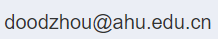

个人简介

周鹏，男，安徽省枞阳县人。硕士毕业后曾在某大型软件公司担任系统架构师多年。2018年毕业于合肥工业大学软件工程专业，获得工学博士学位。随后加入安徽大学计算机科学与技术学院，主要从事在线学习、特征选择、动态聚类和异常检测等方向的研究工作。目前主持国家自然科学基金青年项目一项，参与国家自然科学基金项目多项。在IEEE TNNLS、ACM TKDD、INS、PR、KBS等国际期刊和会议发表论文多篇，同时担任IEEE TNNLS、ACM TKDD、KBS、DMKD等多个国际知名期刊审稿人
联系方式：
项目情况
主持项目
国家自然科学基金青年项目：基于模糊粗糙集的混合特征流选择方法研究（61906056），2020.1 - 2022.22，24万，主持。
参与项目
横向课题：光伏太阳能电池丝网印刷机参数自动调整算法研究， 2021.5-2022.5， 50万。
国家自然科学基金委员会面上项目：面向多源高维数据流的在线特征选择与分类方法研究（61673152），2017.1 - 2020.12， 61万，结题, 参与。
论文情况
[1] Peng Zhou, Shu Zhao, Yuanting Yan, Xindong Wu. Online scalable streaming feature selection via dynamic decision. ACM Transactions on Knowledge Discovery from Data, 16(5):87, 2022. (JCR三区，CCF B)
[2] Peng Zhou, Peipei Li, Shu Zhao, Xindong Wu. Feature Interaction for Streaming Feature Selection. IEEE Transactions on Neural Networks and Learning Systems, 32(10):4691-4702, 2021. (JCR一区Top期刊，CCF B)
[3] Peng Zhou, Ni Wang, Shu Zhao. Online group streaming feature selection considering feature interaction. Knowledge-Based Systems, 226:107157, 2021. (JCR一区Top期刊，CCF C)
[4] Peng Zhou, Peipei Li, Shu Zhao, Yanping Zhang. Online early terminated streaming feature selection based on Rough Set theory, Applied Soft Computing, 113(B):107993, 2021. (JCR二区Top期刊)
[5] 吴信东,李娇,周鹏,卜晨阳.碎片化家谱数据的融合技术, 软件学报, 32(9):2816-2836, 2021.(CCF A)
[6] Peng Zhou, Xuegang Hu, Peipei Li, Xindong Wu. Online Streaming Feature Selection Using Adapted Neighborhood Rough Set. Information Sciences, 2019, 481: 258-279. (JCR一区Top期刊，CCF B)
[7] Peng Zhou, Xuegang Hu, Peipei Li, Xindong Wu. OFS-Density: A novel online streaming feature selection method, Pattern Recognition, 2019, 86:48-61. (JCR一区Top期刊，CCF B)
[8] Xuegang Hu, Peng Zhou, Peipei Li, Jing Wang, Xindong Wu. A survey on online feature selection with streaming features. Frontiers of Computer Science, 2018, 12 (3): 479-493. (JCR二区)
[9] Peng Zhou, Xuegang Hu, Peipei Li, Xindong Wu. Online feature selection for high-dimensional class-imbalanced data. Knowledge-Based Systems, 2017, 136:187-199. (JCR一区Top期刊，CCF C)
[10] Peng Zhou, Xuegang Hu, Peipei Li. A New Online Feature Selection Method Using Neighborhood Rough Set. IEEE International Conference on Big Knowledge, 2017.8.9 -8.10.